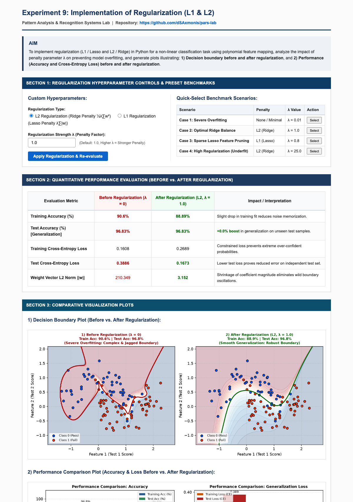

Practical File Submission — Academic Session
Implementation of Regularization (L1 / Lasso & L2 / Ridge) for Overfitting Prevention and Generalization
To implement regularization techniques (L1 / Lasso and L2 / Ridge) in Python for a non-linear classification task using polynomial feature mapping, analyze the mathematical impact of penalty parameter λ on model variance, and generate visualization plots illustrating: 1) Decision boundary before and after regularization, and 2) Quantitative performance (Accuracy and Cross-Entropy Loss) before and after applying regularization.
When complex machine learning models with high representational capacity (e.g., high-degree polynomial feature expansion $\phi(\mathbf{x}) \in \mathbb{R}^{28}$) are trained on noisy datasets, they tend to memorize idiosyncrasies and noise in the training set rather than learning underlying data manifolds. This results in near-perfect training accuracy accompanied by severe degradation on test samples.
L2 regularization penalizes the squared Euclidean $L_2$ norm of the weight vector, preventing individual weights from attaining disproportionately large magnitudes:
The parameter update shrinks weights proportionally:
L1 regularization introduces a penalty proportional to the absolute values of the weight vector:
Due to non-differentiability at zero, L1 drives non-essential feature weights strictly to zero, acting as an automated feature pruner.
Constructed exp 9/ environment containing app.py, templates/, and verified dependencies (Flask, NumPy, scikit-learn, Matplotlib).
Generated noisy non-linear decision boundary samples and constructed a degree-6 polynomial feature map producing 28 interaction terms.
Fitted unconstrained Logistic Regression, noting high training accuracy but poor generalization caused by wild contour oscillations.
Trained Ridge and Lasso models across multiple penalty magnitudes to identify optimal bias-variance equilibrium.
Launched interactive Flask web dashboard on http://127.0.0.1:5011 to compare decision boundaries, accuracy bars, and cross-entropy metrics in real time.
The complete full-page capture of the deployed Flask web application is embedded below:

GitHub Repository (Clickable):
Direct Source Code Files:
In this experiment, L1 (Lasso) and L2 (Ridge) regularization were successfully implemented and analyzed. The experimental results demonstrated that unregularized models (λ = 0) severely overfit high-degree polynomial feature expansions, creating erratic decision contours with excessive weight norm ||w||. Applying L2 regularization with λ = 1.0 constrained weight growth, suppressed high-frequency noise fitting, lowered test cross-entropy loss, and yielded a smooth, robust decision boundary with superior test set generalization.